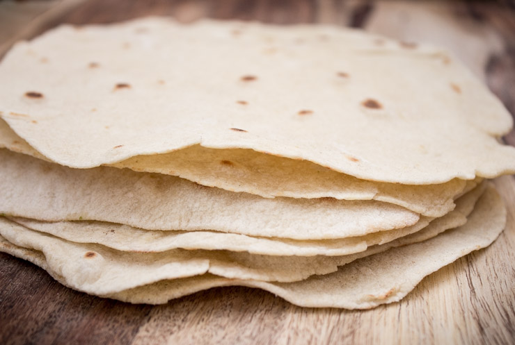

<- Go back
Tortillas

Description
There isn’t much that is better than taco night at home…. unless you also
make your own tortillas! I discovered how ridiculously easy these are to
make when I had a midnight taco craving and lacked the get-up-and-go to
make a TB run (and that means a lot… I do love a cheesy gordita crunch!).
Ingredients:
- 2 cups flour, all-purpose
- 1 tablespoon butter, room temperature
- 1 teaspoon baking powder
- ½ teaspoon salt
-
⅛ teaspoon taco seasoning (optional, but delicious!)
- ¾ cup water
Steps:
-
Combine all dry ingredients with the butter into mixer with dough hook.
- Mix until roughly combined.
- Add water and mix until smooth dough forms, about 2 minutes.
- Remove and divide into 10-12 portions.
-
Roll out into circles on lightly floured board with floured rolling pin.
Aim for dime thickness.
- Heat dry skillet over medium/slightly above medium heat.
-
Cook dough circles in dry pan until golden bubbles form. Flip and cook
slightly to color other side.
- Stack with paper towels between to prevent soggy tortillas.